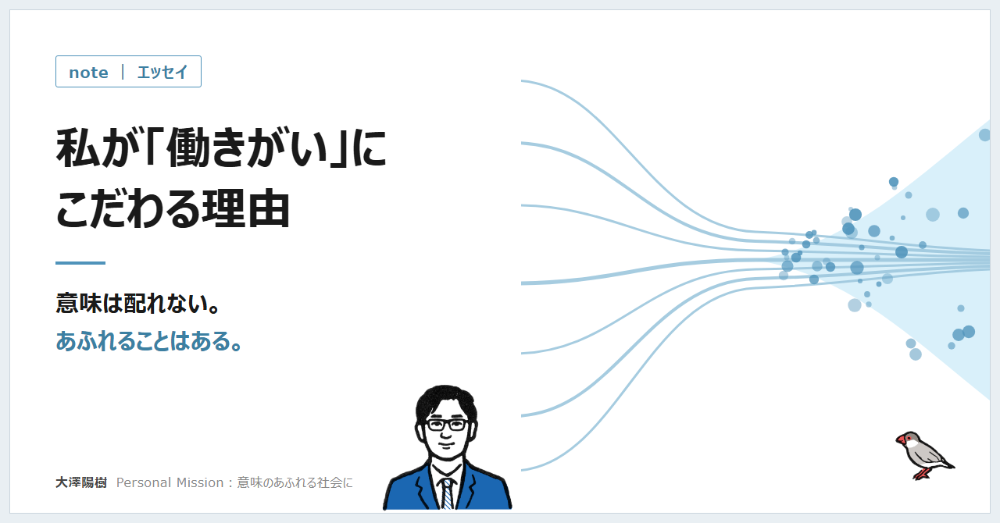
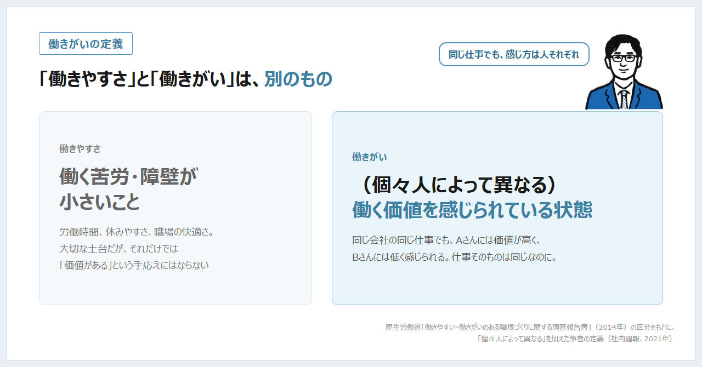
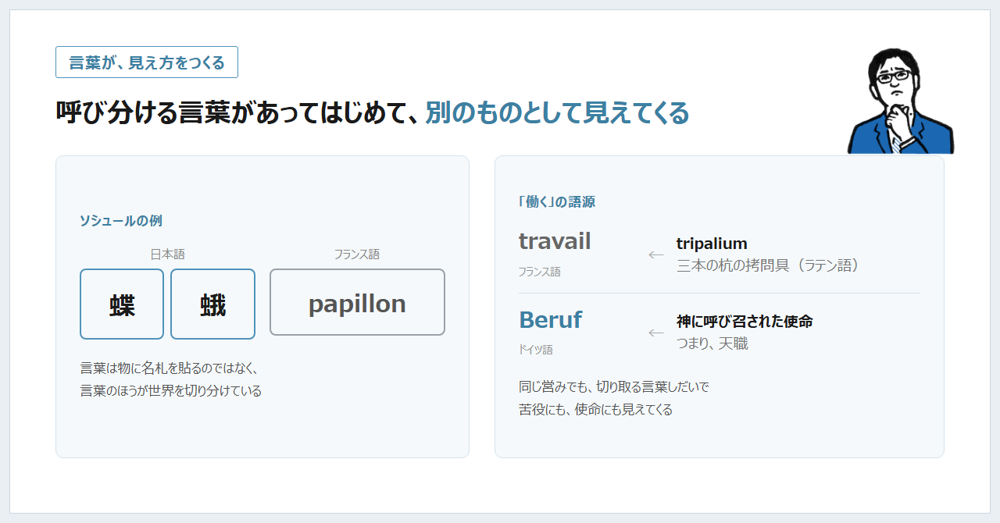
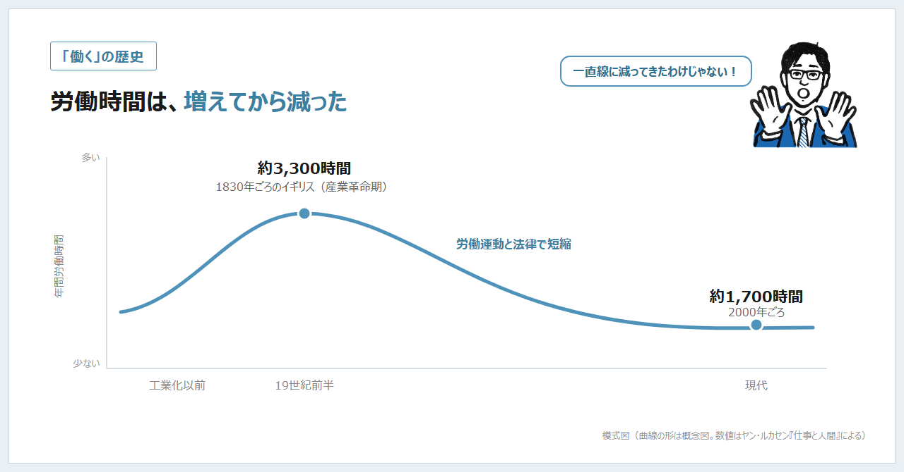
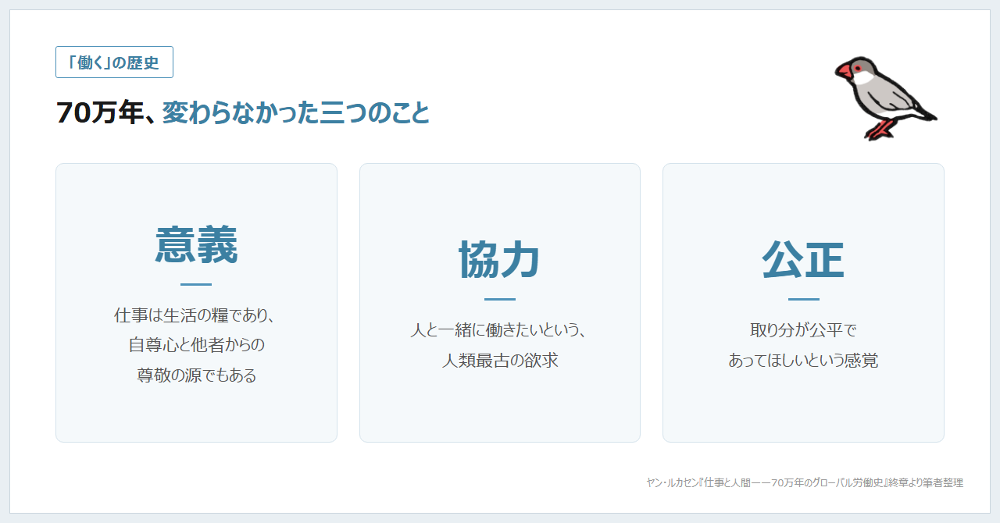
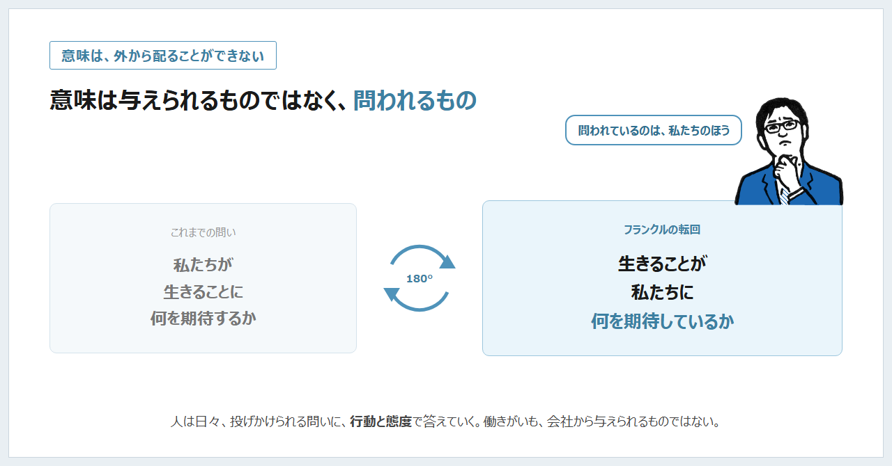
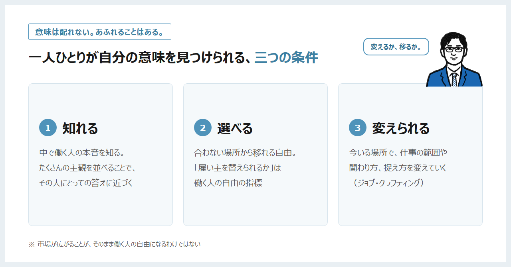

COLUMN
「働きがい」にこだわる理由——意味は配れない。あふれることはある。

はじめに
誰も興味のない話だと思いますが、私の個人サイトのプロフィールには長年「Personal Mission：意味のあふれる社会に」と書いています。
ちょうどこの数か月、組織・人事・労務について、思想や歴史から人事制度、労働法、キャリア理論まで、一度ぜんぶ体系的に整理し直すということをやっています。その最初の分野が「働くことの思想と労働の歴史」でした。整理しながら、自分がなぜこの言葉にこだわってきたのかを、改めて考えることになりました。
今回はその途中経過を、いつものnoteとは少し違う形で書いてみます。結論の出ていないところも、そのまま置いておきます。ちなみにめちゃくちゃ長いポエムです。よっぽどの変態じゃないと読みきれないと思いますが、自分の思考の整理も兼ねて徒然なるままに。
「意味のあふれる社会」は借り物の言葉
先に正直に書いておくと、「意味のあふれる社会」は私が考えた言葉ではありません。
新卒で入社したリンクアンドモチベーションのミッションの、一部分の言葉です。
最初は、会社の言葉として覚えた言葉でした。そもそも"意味"とはなにか。新卒入社時にはよく分かっていなかったのが本音です。
それがいつの間にか、自分の言葉になっていました。オープンワークに移ってからも、社長になってからも、プロフィールからこの一文だけは消していません。
後で書きますが、精神科医の神谷美恵子氏は『生きがいについて』の中で、生きがいは「借り物や人まねでは生きがいたりえない」と書いています。借り物から始まった言葉を、どうやって自分のものにしてきたのか。この記事は、その答え合わせでもあります。
原点①：中学の道徳ノートと「大河となれ」
私が通っていた中学・高校では、毎週月曜の朝一番に道徳の授業がありました。校長先生の話を一字一句速記し、放課後に清書して、感想文と一緒に提出する。当時は嫌で嫌で仕方ありませんでした。
ところが、そのとき清書したノートが、大学、社会人、管理職、経営者と立場が変わるにつれて味わい深くなり、いまでは宝物になっています。
なかでも好きなのが、『論語物語』をもとにした「大河となれ」という話です。小さな河は蛇行したり、干からびたり、淀みにはまったりする。大きな河は、多少の起伏や干ばつがあっても、海に向かって流れ続けられる。人も同じで、大きな志を持ち、同じ志の仲間が集まれば、大きな河になれる。
中学生の私には全くピンときませんでした。でもいま振り返ると、「一人の人生は、何かとつながったときに意味を持つ」という感覚の、いちばん古い記憶はここにあるのだと思います。
原点②：寝る間を惜しんで働いた学生時代
大学時代は海外留学とバックパックのため、大学院時代は生活費を稼ぐため、寝る間を惜しんでアルバイトや業務委託の仕事をしていました。
このときの私にとって、働くことは何より「やりたいことと生活のための手段」でした。だからこそ、「やりがい」や「働きがい」という言葉を、きれいごととして片づけたくない気持ちがあります。お金のために働くことは、まったく恥ずかしいことではない。そのうえで、同じ時間を使うなら、そこに意味も感じられたほうがいい。この「両方」の感覚は、たぶんこの頃に身についたものです。
原点③：働けなくなるかもしれないという経験
私は過去に、無理を重ねた結果、大きな病気をしたことがあります。そしていまも、一生付き合っていく病気の治療を続けています。不幸中の幸いで、いまは薬のおかげで寛解を維持できています。
それでも、働くことができなくなるかもしれない、という瀬戸際に追い込まれたことで、それまでよりもずっと「働くとは何か」を考えるようになりました。どうせ同じ時間を過ごすなら、なにか社会に大きな価値を残すような仕事をしたい。万が一働けなくなったときに、後悔しないような仕事をしていたい。いまの私の働き方の根っこには、この二つの気持ちがあります。
神谷美恵子氏の本に、ハンセン病療養所の青年の話が出てきます。気象観測の仕事を任されて見違えるように元気になったのに、制度が変わって年金が出るようになり、その仕事を失うと、また心を病んでしまった。生活の保障は大切です。けれども、それだけでは「働く意味」の代わりにはならない。
もちろん、療養所という極限に近い状況と、私の経験を同じに並べるつもりはありません。それでも、この話を読んだとき、自分が病気をしたときの感覚と重なるところがありました。
そもそも「働きがい」とは何か

ここで、少し定義の話をさせてください。
オープンワークのコーポレートスローガンは「さあ、自由に生きよう。働きがいをすべての人へ」です。社長になって間もない頃、社内向けの週報で、働きがいを次のように定義しました。
働きがいとは、（個々人によって異なる）働く価値を感じられている状態
厚生労働省の報告書では、「働きがい」を「働く価値がある」こと、「働きやすさ」を「働く苦労や障壁が小さい」こととして分けています。私はそこに「個々人によって異なる」と付け加えました。同じ会社の同じ仕事でも、Aさんには価値が高く、Bさんには低く感じられる。仕事そのものは同じなのに、です。
この定義は、5年たったいまも変えていません。むしろ、思想や歴史を整理する中で、補強されたと感じています。
「生きがい」と「生きがい感」は違う
神谷美恵子氏は、「生きがい」という言葉を二つに分けています。生きがいの源泉や対象（何が生きがいか）と、生きがい感（生きがいを感じている心の状態）です。
さらに、生きがい感は、ふつうの幸福感とは少し違うのだそうです。未来に向かっていること、自分という存在の中心に触れていること、価値の手応えを伴っていること。
これを読んで、満足度と働きがいの違いがすっと腑に落ちました。給料に満足している、職場が快適だ、というのは大切なことですが、それだけでは「この仕事には価値がある」という手応えにはならない。逆に、大変でも手応えのある仕事はある。
言葉が、働くことの見え方をつくる

もう一つ、整理していて驚いたのが、「働く」という言葉の出自です。
その前に、少し寄り道をさせてください。言語学者のソシュールは、言葉はもともと世界にある物事に名札を貼っているのではなく、言葉のほうが世界を切り分けている、と考えたそうです。よく引かれる例では、日本語は「蝶」と「蛾」を別の言葉で呼び分けますが、フランス語ではどちらもおおむね papillon と呼びます。呼び分ける言葉がなければ、二つは別のものとしては見えてこない、というわけです。
「働く」にも同じことが言えそうです。フランス語で労働を意味する travail は、三本の杭を組んだ拷問具 tripalium が語源だといわれます。一方、ドイツ語の Beruf は「神に呼び召された使命」、つまり天職です。同じ営みでも、どんな言葉で切り取るかによって、苦役にも使命にも見えてくる。歴史を振り返っても、労働が奴隷のする苦役と見られた時代もあれば、天職とされた時代もあり、近代にはマルクスが「疎外」を論じました。
つまり、「働くことは尊い」も「働くことは苦役だ」も、どちらもある時代の言葉がつくった見方にすぎない、ということです。
振り返ると、5年前に「働きがい」と「働きやすさ」を分けて定義したのも、同じことだったのかもしれません。二つを別の言葉で呼び分けてはじめて、「働きやすいけれど、働きがいはない」職場や、その逆が見えるようになる。言葉と歴史を知ると、目の前の当たり前が「選べるもの」に見えてきます。
「働く」の歴史をざざっとさかのぼる
言葉の次は、歴史です。組織人事の整理の中で、一番時間をかけたのがここでした。参考にしたのは、オランダの労働史家ヤン・ルカセン氏の『仕事と人間——70万年のグローバル労働史』、人類学者ジェイムス・スーズマン氏の『働き方全史』、文化人類学者デヴィッド・グレーバー氏の『ブルシット・ジョブ』などです。どれも分厚い本なので、ここでは「働きがい」に関わるところだけを、駆け足でたどってみます。
「週15時間」の話には、続きがある
「狩猟採集民は週15時間しか働かず、残りは休んだり遊んだりしていた」という話を、聞いたことがある方も多いと思います。現代人は働きすぎだ、という文脈でよく引かれる話です。
ただ、これには続きがあります。その15時間は食べ物を集める時間だけで、加工や調理、住まいや道具づくりまで含めると週37時間ほどになる、という指摘があるそうです。集団によっても大きく違い、男性が毎日7時間ほど狩りをしていた人々の記録もあります。
私が面白いと思ったのは、この論争が結局「何を仕事と数えるか」の問題に行き着くという点です。通勤は仕事か。家事や育児は仕事か。持ち帰りの仕事は。いまの職場で起きている議論と、まったく同じ形をしています。
自分より長生きするものをつくる
いちばん心に残ったのは、トルコにあるギョベクリ・テペという遺跡の話です。農業が始まる前、いまから1万年以上前につくられた、巨大な石の建造物です。
スーズマン氏によれば、これをつくるには石工や彫刻家、設計者のような専門の担い手と、その人たちを食べさせる人々が必要だったはずで、人がフルタイムの専門的な仕事を持っていた最初の証拠だといいます。そして、目先の食べ物を得るためではなく、「つくった人よりはるかに長生きするもの」をつくるために、何世代にもわたって取り組んだ最初の証拠でもある、と。
これを読んだとき、中学の道徳ノートの「大河となれ」と、病気をしたときに思った「社会に大きな価値を残すような仕事をしたい」という気持ちが、1万年以上前の石の遺跡とつながったような気がしました。人は、食べるためだけに働いてきたわけではないのかもしれません。
「締切」と「足りない」は農業から生まれた？
スーズマン氏は、農業が人の時間感覚を変えたとも書いています。採集民は今日と近い明日を生きていたけれど、農耕民は種まき、収穫、備蓄というサイクルの中で、過去・現在・未来を同時に生きなければならなくなった。水やりも搾乳も、後回しにはできない。「締切」の起源はここにある、という見立てです。
さらに、急な寒冷化で環境を信じられなくなった人々が穀物を大量に貯め込み始め、それが「足りない」という感覚、つまり欠乏の観念を生んだのではないか、とも推定しています。
これはあくまで一人の研究者の推定ですが、職場に置き換えると妙に腑に落ちます。将来を信じられない組織では、情報も、権限も、人も、抱え込まれていく。
「時間を売る」という発明

時代はぐっと下ります。グレーバー氏は、歴史家E・P・トムスンの議論をもとに、時計のない社会では「行為が時間を測っていた」と書いています。中世ヨーロッパでは「卵が二回ゆであがるまで」のような言い方をしていたそうです。それが時計の普及とともに、「時間が行為を測る」ものへとひっくり返った。
時は金なり、となった瞬間から、時間は使ったり、無駄にしたり、節約したりできるものになりました。工場にはタイムカードが入り、学校ではベルの音とともに生徒が教室を移動するようになる。グレーバー氏によれば、このしくみは子どもたちを将来の工場労働に慣れさせるために、意識的に設計されたものだったそうです。毎朝のチャイムにそんな来歴があったとは、考えたこともありませんでした。
労働時間も、ずっと減ってきたわけではありません。産業革命期のイギリスでは年間3,300時間ほどまで増え、そこから労働運動と法律によって、2000年ごろには1,700時間ほどまで下がってきました。増えてから減った、きれいな逆U字です。
1日8時間労働は、働く人たちが勝ち取ったものです。ただグレーバー氏は、「自由時間」を求めるという行為そのものが、「勤務時間中の時間は、それを買った人のもの」という考え方を強めてしまった、とも指摘しています。勝ち取ったことと、時間を売るという前提が固まったこと。私は、どちらも本当なのだと思います。
いま私たちが当たり前だと思っている「雇われて、週5日、1日8時間働き、時間を売ってお金を得る」という形は、人類史の中ではかなり新しいものなのです。
「天職」という意味と減らされた休日
宗教改革は、働くことに「天職」という前向きな意味を与えました。先ほどのドイツ語 Beruf です。ところがルカセン氏によれば、同じ宗教改革は祝祭日を減らし、働く日数をむしろ増やしていたそうです。
働くことに意味を与えることと、もっと働かせることが、同じ時に起きていた。この話を読んで、少しどきりとしました。働きがいを語る側が気をつけるべきことが、ここに詰まっているように思えたからです。この話は、次の節につながります。
70万年から変わらなかった三つのこと

ルカセン氏は、70万年にわたる労働の歴史を通して変わらなかったものとして、三つを挙げています。
- 意義：仕事は生活の糧であると同時に、自尊心や、他者からの尊敬の源でもあること
- 協力：人と一緒に働きたいという、人類最古の欲求
- 公正：取り分が公平であってほしいという感覚
働く時間も、時間の測り方も、雇われ方も、驚くほど変わってきました。それでも、働くことに意味を求める気持ちだけは、ずっと残っている。働きがいは、豊かになった現代人の贅沢な悩みではなく、人がずっと抱えてきた問いなのだと思います。
意味は外から配れない

ここからが、経営者として一番考えさせられたところです。
ナチスの強制収容所から生還した精神科医、ヴィクトール・フランクルは、『夜と霧』の中で、生きる意味についての問いを180度ひっくり返す必要があると書いています。私たちが生きることに何を期待するかではなく、生きることが私たちに何を期待しているかが問題なのだ、と。
私なりに言い換えると、こういうことだと受け取っています。意味は与えられるものではなく、問われるもの。人は日々、生きることから投げかけられる問いに、行動と態度で答えていく。だから意味は一般論の中にはなく、その人が置かれた具体的な状況の中にしかない。
神谷美恵子氏の「借り物や人まねでは生きがいたりえない」も、同じところを指しているように見えます。時代も国も違う二人の精神科医が、「意味は外から配ることができない」という一点で重なっている。
働きがいも、同じだと思います。働きがいは、会社から与えられるものではない。目の前の仕事から投げかけられる問いに、自分の行動と態度で答えていく中で、少しずつ見つかっていくものです。
これは、パーパス経営やエンゲージメント向上が盛んないま、会社の側にいる人間には耳の痛い話です。会社がいくら立派な意味を掲げても、それを受け取るだけでは、その人の働きがいにはならない。会社にできるのは、意味を渡すことではなく、一人ひとりに問いが立つ状況をつくるところまでなのだと思います。
さらに怖いのは、宗教改革の「天職」と休日削減の話のように、意味が「やりがい」の名で押しつけられるときです。「これは成長のための試練だ」という言葉で、厳しい環境が正当化されてしまう。哲学者の國分功一郎氏は、やりがいのある仕事を全員に求めることが新しい強迫観念になりうる、という趣旨の指摘を紹介しています。私も、働きがいを語る立場だからこそ、この危うさには自覚的でいたいと思っています。
フランクルや神谷氏の本は、極限状況の記録です。それを職場の話にそのまま持ち込むのは慎重であるべきですし、まして「どんな環境でも意味は見いだせる」と言って環境の改善をさぼる理由にしてはいけない。私はそう受け取っています。
口では意味を求め、行動では年収を見にいく
もう一つ、どうしても書いておきたいことがあります。
マッキンゼーの記事（2022年）で紹介されている、世界の1万6,000人以上の働き手を対象にした分析では、どの所得水準でも仕事の満足度を一番左右していたのは「人間関係」と「興味深い仕事」で、それぞれ説明できる差の2割ほどを占めていたそうです。給与の水準は、わずか4%でした。
ところが、OpenWorkで一番読まれているクチコミは、「年収」です。
人は口では意味を求め、行動では年収を見に行く。私はこのズレを、矛盾だとは思っていません。
物質主義と幸福についての259サンプルのメタ分析（Dittmarら、2014年）では、お金やモノの獲得を人生の中心に置く人ほど、幸福度が低い傾向が示されたそうです。一方で、カーネマンとキリングスワースという、かつて反対の結論を出していた二人の研究者が2023年に共同で出した結論は、「多くの人の幸福は、所得とともに緩やかに上がり続ける」というものでした。お金は大事です。ただ、お金だけでは届かないものがある。
幸福になりたい。でもその道筋は見えにくいから、いちばんわかりやすい年収を見に行く。それはとても自然なことです。だから私たちは、年収という入口を否定もしないし、そこで止まりもしない。年収のクチコミから、風通しや、人の関係や、成長の手応えへとつながっていけるようにしたい。社内ではこれを「入口は年収、出口は働きがい」と言っています。
意味は配れない。あふれることはある。

では、「意味のあふれる社会」とは何なのか。いまの私の答えを書いておきます。
意味は外から配れない。だとすると、社会や会社にできることは、意味を配ることではなく、一人ひとりが自分の意味を見つけられる条件を整えることだと思っています。働きがいを上げることはできなくても、下げないことはできる。働きがいが育つ条件を設計することはできる。
その条件は、私の中では三つあります。
一つめは、知れること。 自分に合う場所を選ぶには、中で働く人の本音が必要です。クチコミという、一人ひとりの「感じ方」の集まりを扱う仕事を、私たちがしている理由はここにあります。働きがいが人によって違うなら、客観的な正解を一つ示すより、たくさんの主観を並べるほうが、その人にとっての答えに近づけるはずです。
二つめは、選べること。 ソニーの共同創業者である盛田昭夫氏は、新入社員に「ソニーに入ったことを後悔することがあれば、早く場を変えなさい。人生は一度しかない」という趣旨の言葉を贈っていたと伝えられています。合わない場所から移れる自由があること。それは働く人にとって、一番の交渉力でもあります。
ルカセン氏も、雇われて働く人の自由をはかる一番の指標として「雇い主を替えられるか」を挙げています。替えるためには、替える先のことを知らなければならない。一つめの「知れること」と、二つめの「選べること」は、つながっています。
ただ、ルカセン氏は同時に、労働市場が広がることがそのまま働く人の自由になるわけではない、とも書いています。古代ギリシャでは、賃金で働く人と奴隷が同時に存在していたそうです。転職の選択肢が増えることは大切ですが、それだけで自由になれるわけではない。この留保は、転職に関わる事業をしている私たちこそ、忘れてはいけないと思っています。
三つめは、変えられること。 移るだけが答えではありません。今いる場所で、仕事の範囲や人との関わり方、仕事の捉え方を自分で少しずつ変えていく「ジョブ・クラフティング」という考え方があります。病院の清掃スタッフが、自分の仕事を「患者さんの回復を支える仕事」と捉え直す、という例がよく引かれます。同じ仕事を「生活のための仕事（job）」と感じるか、「キャリアの一歩（career）」と感じるか、「天職（calling）」と感じるかは、職業ではなく人によって決まるのだそうです。
変えるか、移るか。どちらが正しいかは、わかりません。ただ、両方の選択肢が手の届くところにある社会では、一人ひとりが自分なりの意味を汲み取れる可能性が、ぐっと上がるはずです。
それが、私の考える「意味のあふれる社会」です。
おわりに
な、ながい…気づけば1万文字近くになってる。でもこのまま投稿します。
借り物から始まった言葉が、いつ自分のものになったのか。書きながら考えていましたが、たぶん、はっきりした瞬間があったわけではありません。学生時代に寝る間を惜しんで働いたとき、病気をしたとき、クチコミを毎日読むようになってから。いろいろな場面で少しずつ、自分の言葉に置き換わってきたのだと思います。
神谷氏の言う通り、生きがいは借り物ではいられない。でも、借り物から始まってはいけない、とは書いていません。最初は誰かの言葉でも、問われ、答え続けているうちに、自分の言葉になっていく。働きがいも、誰かから与えられるものではなく、そうやって自分のものになっていくのだと思います。
みなさんにとって、働きがいとは何でしょうか。長文のポエム、最後まで読んでいただいた方、きっと気が合うのでご連絡ください。お茶でもしにいきましょう。ご馳走しますw
この記事は note（2026年10月12日公開）からの転載です。
← コラム一覧へ